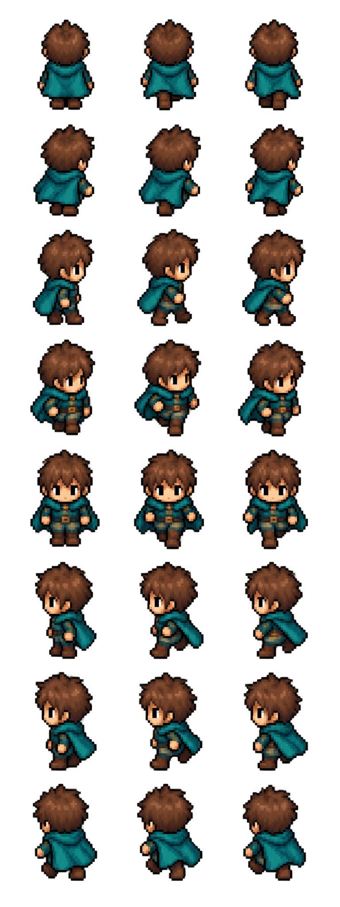

Comment les héros restent lisibles lorsque la carte tourne ou s’incline.
Comprendre ce que cela implique
Les directions du personnage dépendent de la caméra : le même déplacement du monde peut être vu de face ou de dos. L’illustration reste droite tandis que son ancrage suit le plan de la carte.
La planche historique citée dans ce document décrit une étape de création. Les apparences actuelles sont présentées dans l’article Apparence du héros ; la priorité visuelle ne révèle jamais un héros caché.

Dans cet article
Détails de référence
Texte de référence mis en forme et conservé dans l’historique de cet article. Les paragraphes datés peuvent décrire une évolution ou une étape antérieure.
Asset : app/assets/heroes/hero-eight-directions-v1.png. Généré avec l'outil intégré imagegen, avec fond transparent. Grille de quatre colonnes et deux lignes, dans l'ordre N, NE, E, SE puis S, SW, W, NW. Le nord correspond à la vue de dos. La vue choisie dépend du cap du héros moins la rotation de caméra ; en suivi de dos, le rendu reste sur la première case.
Prompt utilisé :
Create a production game sprite sheet, transparent background, EXACTLY 8 separate full body sprites of THE SAME medieval fantasy adventurer. A compact readable 2.5D painted/pixel-inspired RPG style, dark teal cloak, brown leather boots, simple light armor, sword sheathed at belt, bare head brown hair. Orthographic elevated camera 25 degrees, consistent lighting, proportions, scale and idle pose. One sheet in a strict grid of 4 columns x 2 rows of EQUAL square cells, every character centered horizontally in its own cell with feet on same baseline near bottom, ample transparent margins so none overlap. Order left to right: top row N (BACK facing away), NE (back right three quarter facing upper right), E (right profile), SE (front right three quarter). Bottom row S (FRONT facing viewer), SW (front left three quarter), W (left profile), NW (back left three quarter). The eight camera angles must be visibly different, do not rotate a flat image. No text labels, no borders, no scenery, no ground shadows, no contact sheet captions. All sprites identical character, only viewing direction changes. Sheet landscape 2:1 aspect ratio, preferably 2048x1024.
Les illustrations des lieux et le sprite du héros sont affichés par MapBillboards, en dehors du plan incliné. Leurs ancres passent par la même projection que la caméra. Seuls les socles et les ombres restent sur le plan de carte. La taille visuelle varie progressivement selon le zoom, avec un plancher de lisibilité.
Priorité visuelle des héros
Les illustrations du héros local et des autres joueurs visibles partagent un calque réservé au-dessus des lieux, groupes autonomes, terrains et effets du monde. Leurs étendards et noms restent attachés à leur illustration. Le fantôme astral reste au-dessus de ce calque pour permettre sa manipulation. Cette priorité visuelle ne révèle aucun héros supplémentaire et ne modifie aucune règle de position, de proximité ou de combat.